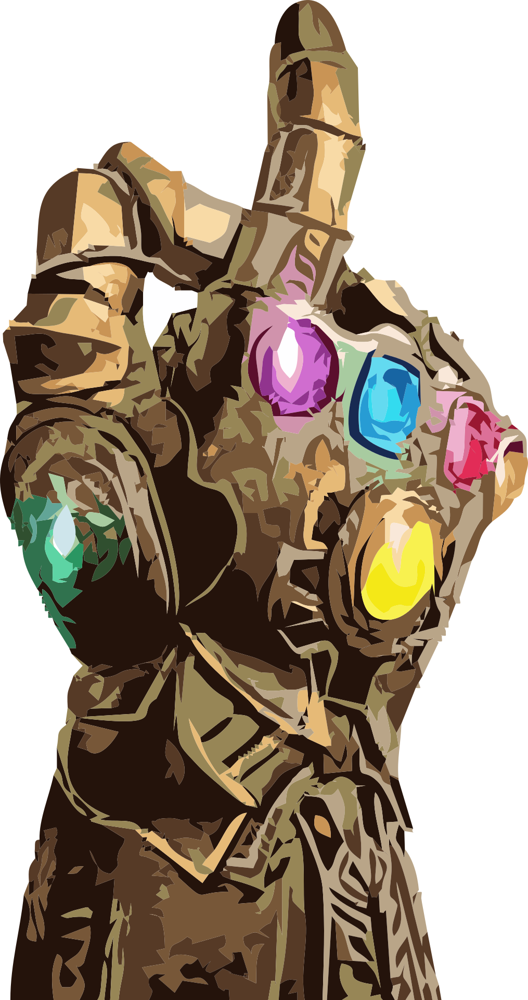

Bosszúállók
...Képek helye...
A Bosszúállók 2012-ben bemutatott szuperhős-fantasy film. Magyarországon április 26-án került a mozikba. Promóciós anyagokon Marvel's Bosszúállók, Marvel: Bosszúállók és Bosszúállók a Marveltől címen is feltűntek. A film szereplői és cselekménye a főszereplők korábbi önálló filmjein alapulnak, azoknak közvetlen folytatása.
| Cím | Megjelenés éve | IMDb értékelés |
|---|---|---|
| Bosszúállók | 2012 | 8,0 |
| Bosszúállók: Ultron kora | 2015 | 7,3 |
| Bosszúállók: Végtelen háború | 2018 | 8,4 |
| Bosszúállók: Végjáték | 2019 | 8,4 |
A Marvel-moziuniverzum mind kritikailag, mind pénzügyileg sikeres. 22,4 milliárd dolláros összbevételével minden idők legtöbb pénzt kereső filmfranchise-a. 2019-ig bezárólag a Marvel legsikeresebb filmje a 2019-ben bemutatott Bosszúállók: Végjáték, amely világszerte több mint 2,7 milliárd dolláros bevételt termelt, ezzel minden idők legnagyobb bevételt elérő filmjévé vált. A mozifilmek mellett ehhez az univerzumhoz kapcsolódóan megjelentek képregények, Marvel-kisfilmek címmel rövidfilmsorozat, valamint több televíziós sorozat is.